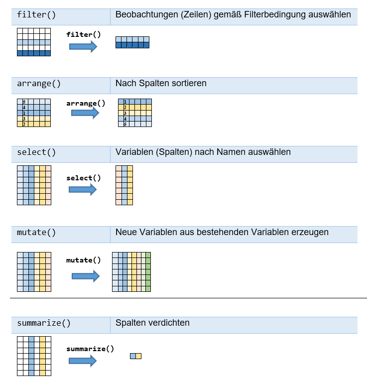
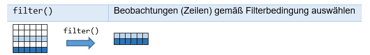
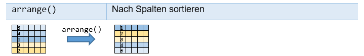
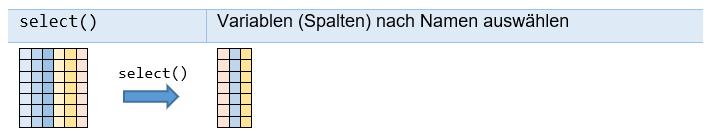
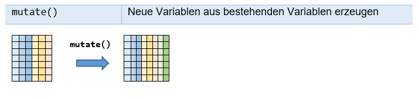
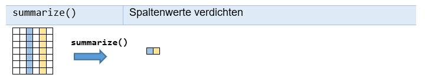

Chapter 7 Data Transformation
Parallel zu diesem Kapitel sollen Sie das Kapitel „5 Data transformation“ aus „R for Data Sciences“ (Wickham and Grolemund 2017) durcharbeiten, das sich mit dem dplyr-Paket (dplyr steht für “data frame applyer”) auseinandersetzt, einer weiteren Kernkomponente der tidyverse-Welt.
Im Folgenden setzen wir voraus:
Dadurch werden die folgenden Pakete (packages) (in der Version: tidyverse 1.2.1) geladen:
ggplot2, purrr, tibble, dplyr, tidyr, stringr, readr, forcats.
In diesem Kapitel wollen wir mit der großen Datensammlung flights arbeiten, die im nycflights13-Paket (Wickham 2021) enthalten ist; daher setzen wir zusätzlich voraus:
7.1 Der Datensatz flights
Der Datensatz flights beschreibt alle Flüge, die 2013 von einem der drei New Yorker Flughäfen (JFK, LGA or EWR) gestartet sind (siehe: ?flights). (Wickham 2021)
## tibble [336,776 × 19] (S3: tbl_df/tbl/data.frame)
## $ year : int [1:336776] 2013 2013 2013 2013 2013 2013 2013 2013 2013 2013 ...
## $ month : int [1:336776] 1 1 1 1 1 1 1 1 1 1 ...
## $ day : int [1:336776] 1 1 1 1 1 1 1 1 1 1 ...
## $ dep_time : int [1:336776] 517 533 542 544 554 554 555 557 557 558 ...
## $ sched_dep_time: int [1:336776] 515 529 540 545 600 558 600 600 600 600 ...
## $ dep_delay : num [1:336776] 2 4 2 -1 -6 -4 -5 -3 -3 -2 ...
## $ arr_time : int [1:336776] 830 850 923 1004 812 740 913 709 838 753 ...
## $ sched_arr_time: int [1:336776] 819 830 850 1022 837 728 854 723 846 745 ...
## $ arr_delay : num [1:336776] 11 20 33 -18 -25 12 19 -14 -8 8 ...
## $ carrier : chr [1:336776] "UA" "UA" "AA" "B6" ...
## $ flight : int [1:336776] 1545 1714 1141 725 461 1696 507 5708 79 301 ...
## $ tailnum : chr [1:336776] "N14228" "N24211" "N619AA" "N804JB" ...
## $ origin : chr [1:336776] "EWR" "LGA" "JFK" "JFK" ...
## $ dest : chr [1:336776] "IAH" "IAH" "MIA" "BQN" ...
## $ air_time : num [1:336776] 227 227 160 183 116 150 158 53 140 138 ...
## $ distance : num [1:336776] 1400 1416 1089 1576 762 ...
## $ hour : num [1:336776] 5 5 5 5 6 5 6 6 6 6 ...
## $ minute : num [1:336776] 15 29 40 45 0 58 0 0 0 0 ...
## $ time_hour : POSIXct[1:336776], format: "2013-01-01 05:00:00" "2013-01-01 05:00:00" ...Der Datensatz flights ist ein „Tibble“. Ein Tibble ist ein leicht angepasster Data Frame, der besser mit tidyverse zusammenarbeitet. Im Vergleich zu einem Data Frame ist bei einem Tibble die Ausgabe eines großen Datensatzes viel besser gelöst. Auch ist der Zugriff auf Teilbereiche der Daten mit Tibbles konsistenter und strenger: mehr Warnungen werden ausgegeben, wenn angesprochene Spalten nicht existieren.
“A concise, and fun, way to summarise the main differences is that tibbles are lazy and surly: they do less and complain more. You’ll see what that means as you work through this section.” (Wickham 2019b, Abschnitt 3.6)
Im Gegensatz zu einem Data Frame wird bei der Erzeugung eines Tibbles nicht automatisch ein character-Vektor in einen Faktor umgewandelt, was bei früheren R-Versionen der Fall war; siehe Abschnitt 5.3.1.
Mithilfe von as_tibble() kann ein Data Frame leicht in einen Tibble umgewandelt werden. Ein Tibble kann auch direkt mit tibble() erzeugt werden. Auf Tibbles werden wir später zurückkommen.
Die Ausgabe des Tibbles flights ist in der Tat recht übersichtlich:
## # A tibble: 336,776 × 19
## year month day dep_time sched_dep_time dep_delay arr_time sched_arr_time
## <int> <int> <int> <int> <int> <dbl> <int> <int>
## 1 2013 1 1 517 515 2 830 819
## 2 2013 1 1 533 529 4 850 830
## 3 2013 1 1 542 540 2 923 850
## 4 2013 1 1 544 545 -1 1004 1022
## 5 2013 1 1 554 600 -6 812 837
## 6 2013 1 1 554 558 -4 740 728
## 7 2013 1 1 555 600 -5 913 854
## 8 2013 1 1 557 600 -3 709 723
## 9 2013 1 1 557 600 -3 838 846
## 10 2013 1 1 558 600 -2 753 745
## # ℹ 336,766 more rows
## # ℹ 11 more variables: arr_delay <dbl>, carrier <chr>, flight <int>,
## # tailnum <chr>, origin <chr>, dest <chr>, air_time <dbl>, distance <dbl>,
## # hour <dbl>, minute <dbl>, time_hour <dttm>flights beschreibt also 336 776 Flüge mithilfe der folgenden 19 Variablen:
| Variable | Bedeutung |
|---|---|
year, month, day |
Date of departure. |
dep_time, arr_time |
Actual departure and arrival times (format HHMM or HMM), local tz. |
sched_dep_time, sched_arr_time |
Scheduled departure and arrival times (format HHMM or HMM), local tz. |
dep_delay, arr_delay |
Departure and arrival delays, in minutes. Negative times represent early departures/arrivals. |
carrier |
Two letter carrier abbreviation. See airlines to get name. |
flight |
Flight number. |
tailnum |
Plane tail number. See planes for additional metadata. |
origin, dest |
Origin and destination. See airports for additional metadata. |
air_time |
Amount of time spent in the air, in minutes. |
distance |
Distance between airports, in miles. |
hour, minute |
Time of scheduled departure broken into hour and minutes. |
time_hour |
Scheduled date and hour of the flight as a POSIXct date. Along with origin, can be used to join flights data to weather data. |
7.2 dplyr-Grundlagen
In dplyr gibt es fünf Schlüsselfunktionen (In (Wickham and Grolemund 2017) werden diese Schlüsselfunktionen auch als „Verben“ bezeichnet.), die jeweils ein Tibble (bzw. ein Data Frame) als erstes Element erwarten und als Resultat ein Tibble (bzw. ein Data Frame) zurückgeben.

Figure 7.1: Schlüsselfunktionen in dplyr.
Daneben gibt es noch Variationen dieser fünf Schlüsselfunktionen wie rename() oder transmute(). Viele dieser Funktionen berücksichtigen Gruppierungen, die mit der Funktion group_by() erstellt werden können. Anstatt auf dem gesamten Datensatz zu arbeiten, operieren sie dann auf den erstellten Gruppen. Dies wird insbesondere mit der Funktion summarize() häufig ausgenutzt. Wir werden hierauf weiter unten eingehen.
7.2.1 filter(): Zeilen auswählen

Figure 7.2: Funktion filter() des R-Pakets dplyr.
Mit filter() können gemäß einer Filterbedingung bestimmte Zeilen ausgewählt werden. Mehrere Filterbedingungen werden dabei logisch mit „Und“ (also mit &) verknüpft.
filter() gibt
komplette Datenzeilen zurück.
nur Datenzeilen zurück, bei denen die Filterbedingung wahr ist; NA-Werte werden ausgeschlossen, es sei denn, sie tauchen explizit in der Filterbedingung auf.
Beispiele
filter(flights, month == 1, day == 1)
filter(flights, month == 11 | month = 12)
filter(flights, month %in% c(11, 12))Hinweis: (Dies ist der Hinweis aus den Übungen zu Kapitel 3:
Der Operator && bezieht sich bei Vektoren nur auf das erste Element; bei Vektoren sollte man statt && den Operator & benutzen! Ähnliches gilt für die Operatoren || und | (siehe z. B. ?‘&‘).
7.2.2 arrange(): nach Spalten sortieren

Figure 7.3: Funktion arrange() des R-Pakets dplyr.
Mit arrange() kann nach Spalten sortiert werden. Mithilfe der Funktion desc() kann in absteigender Reihenfolge sortiert werden.
Beispiele
7.2.3 select(): Spalten auswählen

Figure 7.4: Funktion select() des R-Pakets dplyr.
Mit select() wird der Datensatz reduziert, indem nur bestimmte Spalten ausgewählt werden.
Nützliche Hilfsfunktionen sind folgende:
| Funktion | Zweck |
|---|---|
starts_with("abc") |
sucht nach Namen, die mit “abc” beginnen |
ends_with("xyz") |
sucht nach Namen, die mit “xyz” beginnen |
contains("ijk") |
sucht nach Namen, die “ijk” enthalten |
everything() |
Alle Variablen |
Um Spaltennamen zu ändern, sollte die Funktion rename() benutzt werden.
Beispiele
select(flights, year, month, day)
select(flights, year:day)
select(flights, -(year:day))
select(flights, year, month, day)
select(flights, year:day)
select(flights, -(year:day))
select(flights, starts_with("dep"))
select(flights, ends_with("time"))
select(flights, contains("dep"))
select(flights, time_hour, air_time, everything())7.2.4 mutate(): neue Spalten erzeugen

Figure 7.5: Funktion mutate() des R-Pakets dplyr.
Mit mutate() wird der Datensatz durch neue Spalten erweitert, die aus bestehenden Variablen erzeugt werden. Bei Namensgleichheit werden bereits existierende Variablen überschrieben. transmute() lässt zusätzlich alle nicht genannten Spalten weg.
Beispiele
(flights_sml <- select(flights, year:day, ends_with("delay"), distance, air_time))
mutate(flights_sml, gain = dep_delay - arr_delay, speed = distance / air_time * 60)
mutate(flights_sml, gain = dep_delay - arr_delay, hours = air_time / 60,
gain_per_hour = gain / hours)
transmute(flights, year, gain = dep_delay - arr_delay, hours = air_time / 60,
gain_per_hour = gain / hours) 7.2.5 summarize(): Spalten verdichten

Figure 7.6: Funktion summarize() des R-Pakets dplyr.
Mit summarize() kann ein Datensatz auf eine einzelne Zeile reduziert werden, indem ausgewählte Spalten verdichtet werden. summarise() und summarize() sind Synonyme.
Beispiele
summarize(flights, delay = mean(dep_delay, na.rm = TRUE))
summarize(flights, delay = mean(dep_delay, na.rm = TRUE),
sd = sd(dep_delay, na.rm = TRUE))summarize() wird sehr häufig im Zusammenspiel mit group_by() verwendet. Wir werden weiter unten hierauf detaillierter eingehen.
7.2.6 Der Pipe-Operator %>%
Der Pipe-Operator %>% (In Visual Studio R fügt Strg+Shift+m den %>% ein) ist nicht Bestandteil von Base-R; er wird durch das tidyverse-Paket (Wickham et al. 2019) automatisch eingeführt und spielt in der tidyverse-Welt eine wichtige Rolle.
Allgemein gilt, dass
äquivalent ist zu
Folglich entspricht:
dem Ausdruck:
Als Beispiel wollen wir die Ausgabe der Funktion sd() auf drei verschiedene Arten nachrechnen. Dazu wollen wir die folgenden drei Funktionen nutzen:
potenz <- function(x,n) return(x^n)
zentriere <- function(x) return(x - mean(x))
mittel <- function(x) return( sum(x)/ (length(x)-1)) # Precondition: length(x) > 1Es gilt:
## [1] 3.02765In unserer ersten Variante rufen wir die Funktionen geschachtelt auf:
## [1] 3.02765In der zweiten Variante gehen wir schrittweise vor:
## [1] 3.02765In der dritten Variante nutzen wir schließlich den Pipe-Mechanismus (Wie + darf %>% nicht am Anfang einer Zeile stehen.) (er setzt allerdings voraus, dass Base-R durch ein Paket wie tidyverse erweitert worden ist; Wir hätten dies auch durch die Anweisung require(tidyverse) verdeutlichen können. Ursprünglich stammt der Pipe-Mechanismus aus dem Paket magrittr.):
## [1] 3.02765In komplexen Situationen kann der Pipe-Mechanismus die Lesbarkeit des Quelltextes deutlich erhöhen. Insbesondere in der tidyverse-Welt wird hiervon viel Gebrauch gemacht. Eine Ausnahme bildet ggplot2: es benutzt das gleiche Prinzip, nur wird dort leider + statt %>% benutzt!
7.2.7 Gruppierungen mit group_by()
Die Funktion group_by() und ihr Gegenstück ungroup() ist für sich aus gesehen nicht besonders nützlich. Erst im Zusammenspiel mit Funktionen wie summarize(), die die erstellten Gruppierungen berücksichtigen, entfalten sie ihr Potential. Wir wollen dies an einem Beispiel verdeutlichen. Aus Gründen der Übersichtlichkeit wollen wir hierbei nur einen Teil des Datensatzes flights benutzen:
fluege <- select(flights, month, day, contains("delay"))
fluege <- filter(fluege, !is.na(arr_delay), !is.na(dep_delay))
fluege## # A tibble: 327,346 × 4
## month day dep_delay arr_delay
## <int> <int> <dbl> <dbl>
## 1 1 1 2 11
## 2 1 1 4 20
## 3 1 1 2 33
## 4 1 1 -1 -18
## 5 1 1 -6 -25
## 6 1 1 -4 12
## 7 1 1 -5 19
## 8 1 1 -3 -14
## 9 1 1 -3 -8
## 10 1 1 -2 8
## # ℹ 327,336 more rowsDurch die beiden Filterbedingungen !is.na(arr_delay) und !is.na(dep_delay) schließen wir NA-Werte bei den Verspätungen aus.
Mithilfe des Pipe-Operators können wir stattdessen auch alternativ schreiben:
fluege <- flights %>%
select(month, day, contains("delay")) %>%
filter(!is.na(arr_delay), !is.na(dep_delay))Als Nächstes wollen wir die Funktion group_by() auf fluege anwenden:
## # A tibble: 327,346 × 4
## # Groups: month [12]
## month day dep_delay arr_delay
## <int> <int> <dbl> <dbl>
## 1 1 1 2 11
## 2 1 1 4 20
## 3 1 1 2 33
## 4 1 1 -1 -18
## 5 1 1 -6 -25
## 6 1 1 -4 12
## 7 1 1 -5 19
## 8 1 1 -3 -14
## 9 1 1 -3 -8
## 10 1 1 -2 8
## # ℹ 327,336 more rowsWie man sieht, ist jetzt eine Gruppierung hinzugekommen, bestehend aus 12 Gruppen. Funktionen wie summarize() berücksichtigen diese Gruppierung:
## # A tibble: 1 × 1
## delay
## <dbl>
## 1 6.90## # A tibble: 12 × 2
## month delay
## <int> <dbl>
## 1 1 6.13
## 2 2 5.61
## 3 3 5.81
## 4 4 11.2
## 5 5 3.52
## 6 6 16.5
## 7 7 16.7
## 8 8 6.04
## 9 9 -4.02
## 10 10 -0.167
## 11 11 0.461
## 12 12 14.9summarize() berücksichtigt die Gruppierung in fluege_month: die Mittelwerte werden nun pro Monat berechnet. Da hingegen fluege keine Gruppierung besitzt, wird im ersten Aufruf
summarize(fluege, delay = mean(arr_delay)) der Mittelwert über alle Daten berechnet.
Mit ungroup() kann die Gruppierung wieder rückgängig gemacht werden:
## # A tibble: 1 × 1
## delay
## <dbl>
## 1 6.90Möglich sind auch Gruppierungen nach mehreren Variablen. Dies zeigt das nächste Beispiel:
## `summarise()` has grouped output by 'month'. You can override using the
## `.groups` argument.## # A tibble: 365 × 3
## # Groups: month [12]
## month day delay
## <int> <int> <dbl>
## 1 1 1 11.4
## 2 1 2 13.7
## 3 1 3 10.9
## 4 1 4 8.97
## 5 1 5 5.73
## 6 1 6 7.15
## 7 1 7 5.42
## 8 1 8 2.56
## 9 1 9 2.30
## 10 1 10 2.84
## # ℹ 355 more rowsGruppierungen sind in Verbindung mit summarize() sehr nützlich, werden oft auch bei mutate() and filter() eingesetzt. Im nächsten Beispiel wird zu fluege_month eine zusätzliche Variable hinzugefügt, die in jeder Zeile die entsprechende monatliche durchschnittliche Verspätung bei der Ankunft angibt (vgl. summarize(fluege_month, delay = mean(arr_delay)), siehe oben):
## # A tibble: 327,346 × 5
## # Groups: month [12]
## month day dep_delay arr_delay m_arr_delay
## <int> <int> <dbl> <dbl> <dbl>
## 1 1 1 2 11 6.13
## 2 1 1 4 20 6.13
## 3 1 1 2 33 6.13
## 4 1 1 -1 -18 6.13
## 5 1 1 -6 -25 6.13
## 6 1 1 -4 12 6.13
## 7 1 1 -5 19 6.13
## 8 1 1 -3 -14 6.13
## 9 1 1 -3 -8 6.13
## 10 1 1 -2 8 6.13
## # ℹ 327,336 more rowsEntsprechend können wir die Gruppierung in Verbindung mit filter() nutzen:
## # A tibble: 109,952 × 4
## # Groups: month [4]
## month day dep_delay arr_delay
## <int> <int> <dbl> <dbl>
## 1 12 1 14 1
## 2 12 1 18 6
## 3 12 1 -7 -15
## 4 12 1 5 -19
## 5 12 1 -4 -5
## 6 12 1 -10 -22
## 7 12 1 -4 -21
## 8 12 1 1 -9
## 9 12 1 -11 -11
## 10 12 1 -10 -29
## # ℹ 109,942 more rowsZum Test können wir die Anzahl der Zeilen in der jeweiligen Gruppe bestimmen und die ausgegebenen Monate mit summarize(fluege_month, delay = mean(arr_delay)) vergleichen:
## # A tibble: 4 × 2
## month count
## <int> <int>
## 1 4 27564
## 2 6 27075
## 3 7 28293
## 4 12 27020Die spezielle Funktion n() kann nur in den Funktionen summarize(), mutate() und filter() benutzt werden. Sie gibt die Anzahl der Observationen in der jeweiligen Gruppe zurück.
Übungen
Die folgenden Aufgaben beziehen sich auf den Datensatz flights aus dem Paket nycflights13 (Wickham 2021).
Aufgabe 2
Gesucht sind alle Flüge, die mehr als 150 Minuten verspätet den Zielflughafen erreichten.
Gesucht sind alle Flüge, die mehr als 150 Minuten verspätet den Zielflughafen erreichten, obwohl sie pünktlich gestartet waren.
Gesucht sind alle Flüge in den Monaten September, Oktober, November und Dezember, die mit mehr als 150 Minuten Verspätung den Zielflughafen erreichten.
Aufgabe 3
Sind Verspätungen von mehr als 150 Minuten in den Monaten April bis September deutlich seltener als in den restlichen sechs Monaten des Jahres? Was sind die genauen Prozentzahlen?
Aufgabe 4
Gesucht sind alle Flüge, die mit mehr als 60 Minuten Verspätung gestartet sind, aber mehr als 60 Minuten im Flug aufgeholt haben.
Gesucht sind alle Flüge, die mit mehr als 60 Minuten Verspätung gestartet sind, aber mehr als 60 Minuten im Flug aufgeholt haben und nicht verspätet gelandet sind.
Aufgabe 5
Bei wie vielen Flügen ist die Abflugzeit nicht aufgelistet?
Bei wie vielen Flügen ist die Verspätung der Abflugzeit nicht aufgelistet?
Bei wie vielen Flügen ist die Verspätung der Abflugzeit aufgelistet, aber nicht die Abflugzeit?
Aufgabe 7
Wie lang ist die längste Flugroute? Von wo nach wo?
Listen Sie sortiert nach Länge alle Flugrouten auf, die länger als 4000 km sind. Ausgegeben werden sollen pro Zeile: Start- und Zielflughafen und die Länge in Meilen und km (Umrechnung: 1.000 Meilen entsprechen 1.609,344 km). Benutzen Sie den Pipe-Operator.
Aufgabe 9
Die Zeitformate dep_time und sched_dep_time in flights benutzen das Format HHMM oder HMM; 1607 entspricht also 16:07 Uhr. Erstellen Sie eine Tabelle mit allen Flügen mit den Spalten: year, month, day, flight, dep_time und sched_dep_time
Dabei sollen dep_time und sched_dep_time eine Darstellung haben, die der Anzahl der Minuten nach Mitternacht entspricht. Schreiben Sie hierfür eine Funktion zeitInMinuten(). Die mögliche Zeitangabe 2400 für Mitternacht soll dabei auf 0 Minuten abgebildet werden (d.h. zeitInMinuten(2400) soll den Wert 0 zurückgeben).